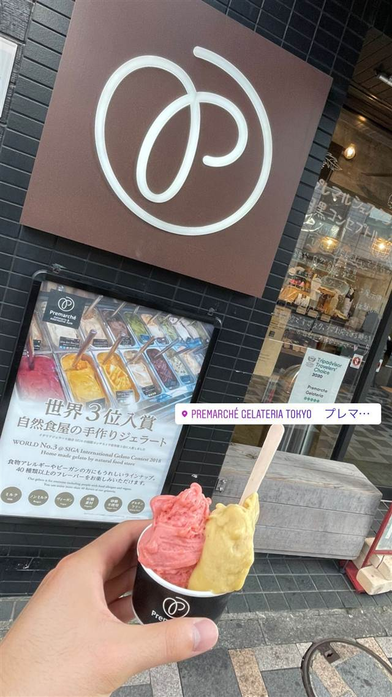
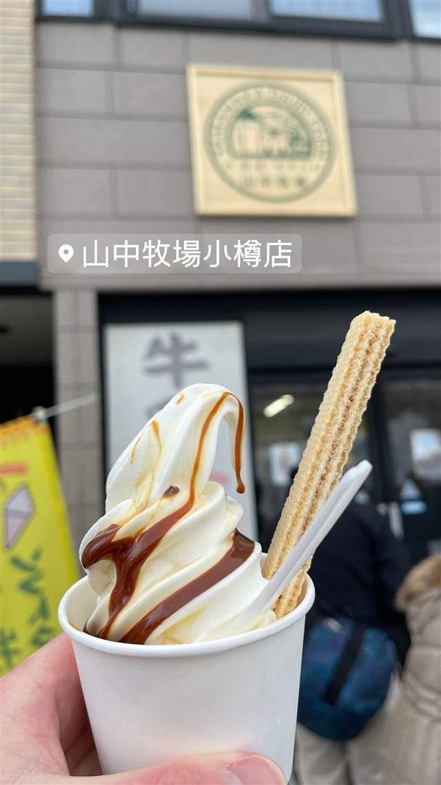

ブルーシール 国際通り店
米軍統治下の乳製品会社発祥、紅芋やサトウキビ味のアイス
ブルーシール 国際通り店
1948年、米軍統治下の沖縄で米軍向け乳製品供給会社として誕生し、1963年に浦添市牧港で一般向け1号店をオープン。アメリカ生まれ沖縄育ちのアイスクリームとして、紅芋やサトウキビなど沖縄ならではのフレーバーで親しまれている。
TRIVIA
豆知識
- 『ブルーシール』は米国で優れた酪農製品に贈られる『ブルーリボン賞』の称号に由来する
- 戦後、米軍統治下の沖縄で米軍向け乳製品会社として始まった
REVIEWS
世間の評判
3.57食べログ
塩ちんすこう味の人気と行列
- 塩ちんすこうや紅芋など沖縄らしいフレーバーの人気が高いという声が多い
- 注文するとカップにたっぷり盛ってくれる量の多さを評価する声がある
- 国際通りは観光客で賑わい20分ほど並ぶこともあるという声が多い
- 現金しか使えず電子マネーやカードが使えない点を不便だと感じる人もいる
食べログ 口コミ512件
| 創業 | 1948年創業（フォーモスト社として発足） |
|---|---|
| 系譜 | 1948年に米軍統治下のうるま市で米軍向け乳製品供給会社として発足。1963年に浦添市牧港で一般向け1号店をオープンし、1976年に『フォーモストブルーシール』へ社名変更 |
| 看板 | 紅芋・サトウキビ・ゴーヤーなど沖縄らしいフレーバーのアイスクリーム |
| どこから | 遠方 |
| 行くなら | 行列 |
| 営業時間 | 月〜日 10:00-23:00 |
| 予算 | 昼 ～¥999 夜 ～¥999 |
| 場所 | 美栄橋駅 沖縄県那覇市牧志1-2-32 |
| メモ | 国際通りには複数店舗があり、観光客で常に賑わう |
食べたもの：アイスクリーム / アイスクリーム / ブルーシールアイス / アイスクリーム
NEARBY
近い店・同じ系統の店
-
 ハワイ 牧志駅
ハワイアンフルーツカフェ -the Sea-
久米島の海洋深層水を極薄の氷に削り海を食べるかき氷に仕立てる
昼 ¥1,000～¥1,999 夜 ¥1,000～¥1,999
ハワイ 牧志駅
ハワイアンフルーツカフェ -the Sea-
久米島の海洋深層水を極薄の氷に削り海を食べるかき氷に仕立てる
昼 ¥1,000～¥1,999 夜 ¥1,000～¥1,999
-
 ブランチ 牧志駅
C&C BREAKFAST OKINAWA
牧志公設市場の食材を使うエッグベネディクトと沖縄ハワイ北欧融合の空間
昼 ¥1,000～¥1,999
ブランチ 牧志駅
C&C BREAKFAST OKINAWA
牧志公設市場の食材を使うエッグベネディクトと沖縄ハワイ北欧融合の空間
昼 ¥1,000～¥1,999
-

アイス・ジェラート 中目黒駅 Premarché Gelateria Tokyo 中目黒駅前店 常時30〜40種、半数近くがヴィーガンの国際受賞ジェラート 昼 ～¥999 夜 ～¥999 -
 アイス・ジェラート 恵比寿
JAPANESE ICE OUCA（ジャパニーズアイス櫻花）恵比寿本店
宇治田原産の最高級抹茶を使う和素材のアイスクリーム
昼 ～¥999 夜 ～¥999
アイス・ジェラート 恵比寿
JAPANESE ICE OUCA（ジャパニーズアイス櫻花）恵比寿本店
宇治田原産の最高級抹茶を使う和素材のアイスクリーム
昼 ～¥999 夜 ～¥999
-

アイス・ジェラート JR小樽駅 山中牧場 小樽店 100％乳製品を3日熟成させた牛乳ソフトクリーム 昼 ～¥999 夜 ～¥999 -
 アイス・ジェラート 熱海駅
熱海プリン（本店）
熱海温泉の源泉水を使いじっくり蒸し上げる土地由来のプリン
昼 ～¥999 夜 ～¥999
アイス・ジェラート 熱海駅
熱海プリン（本店）
熱海温泉の源泉水を使いじっくり蒸し上げる土地由来のプリン
昼 ～¥999 夜 ～¥999